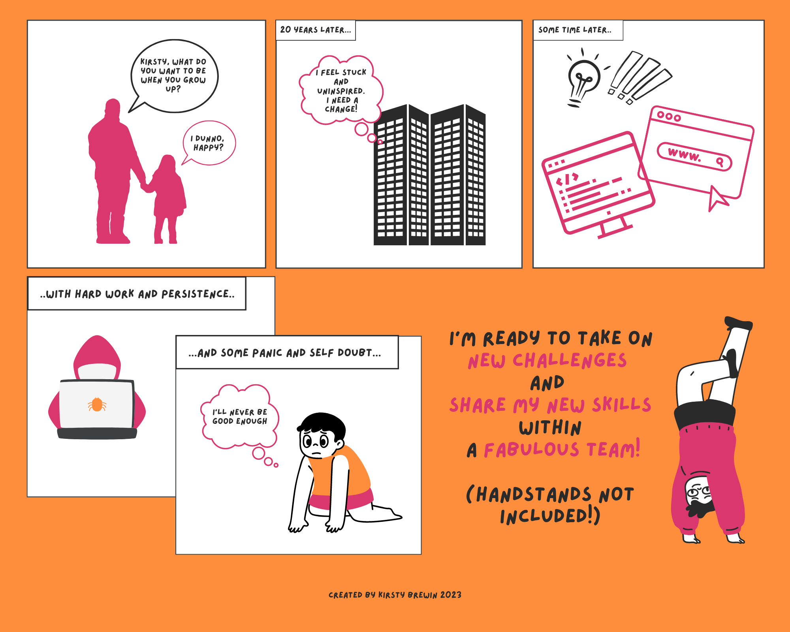

Kia ora from Wellington! I'm Kirsty, a Yorkshire lass with a deep appreciation of the absurdity of everyday life. I've lived over here for nearly 18 years, and despite some hankering to return to Northern England, I call Wellington my home.
I started life wanting to be an Olympic runner, then a police officer, then a typographist, then a sound engineer, then a.. well, the list goes on. In 'grown-up' life I have studied/worked in web content management, conservation biology, written comms, project management, policy, natural resource stewardship and bicycle mechanics. If you asked me now what I'd like to be when I grow up, I'd say whatever challenges me and makes me happy.
Then came the lightbulb moment! I realised the things that brought me great joy throughout my study and work experiences came beautifully packaged in one career - tech!. So, months later I completed a very intense but hugely satisfying Full Stack Web Development Bootcamp with Dev Academy Aotearoa. It confirmed my fondness for crafting beautiful, user friendly websites, and an intention to follow the ever evolving path into tech.
I'm still in the very early stages of my new career, but I think my strengths get on reeaally well with those needed to succeed as a developer. Take problem solving. I am known for my ridiculous ability to fix any broken washing machine. I have no idea why my talent is fixed to that particular genre of machinery, but there it is. Another is perseverance. Have you seen the Terminator? Enough said.
All this talk about machines, but what about humans? That's where my strengths really soar. I thoroughly enjoy and invite communication of all kinds - written, verbal, creative (samba percussion anyone?). Never got the hang of morse code.
I'm ready for opportunities that will help me build on my shiny new skills as a web developer, in a supportive and nurturing team.
